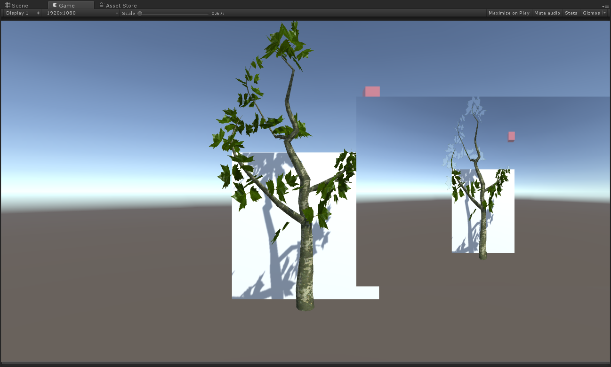
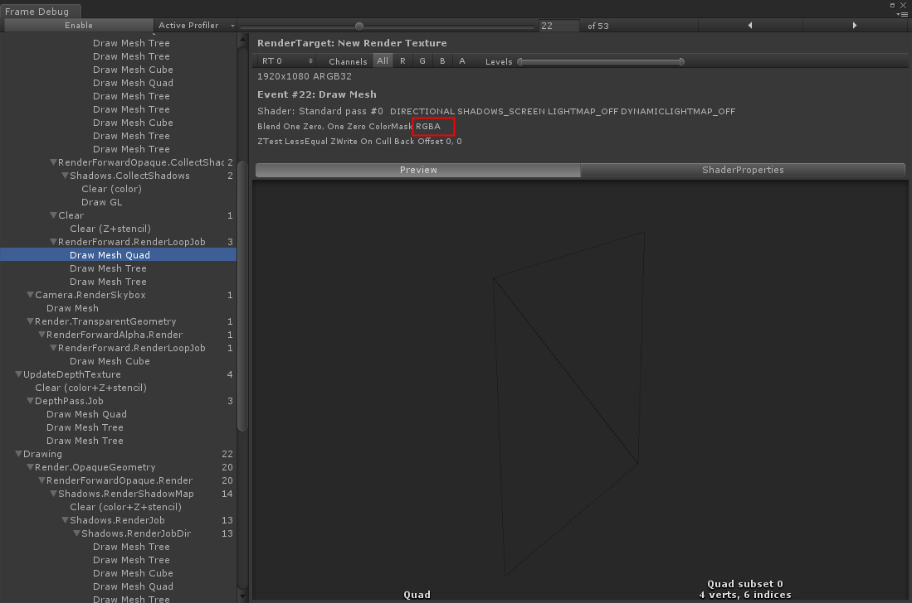
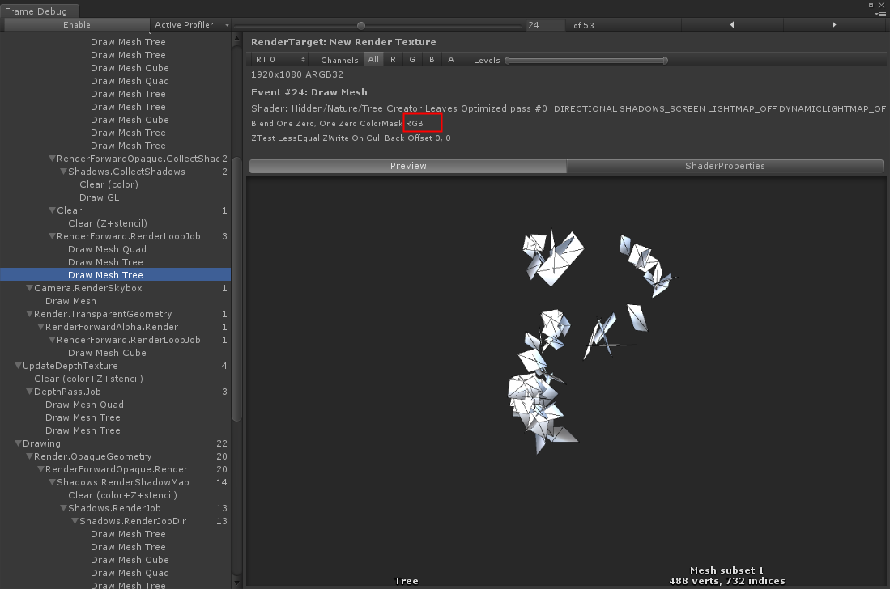
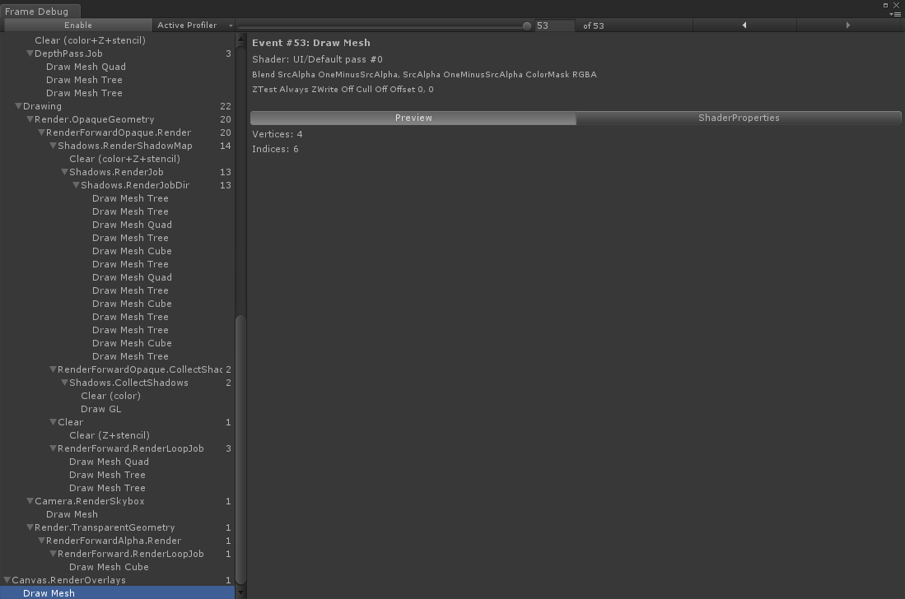
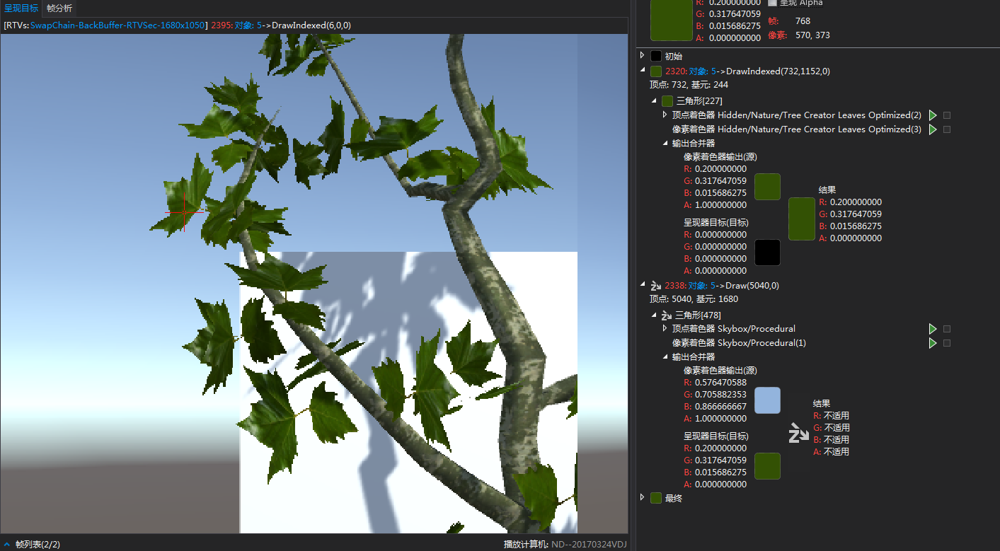
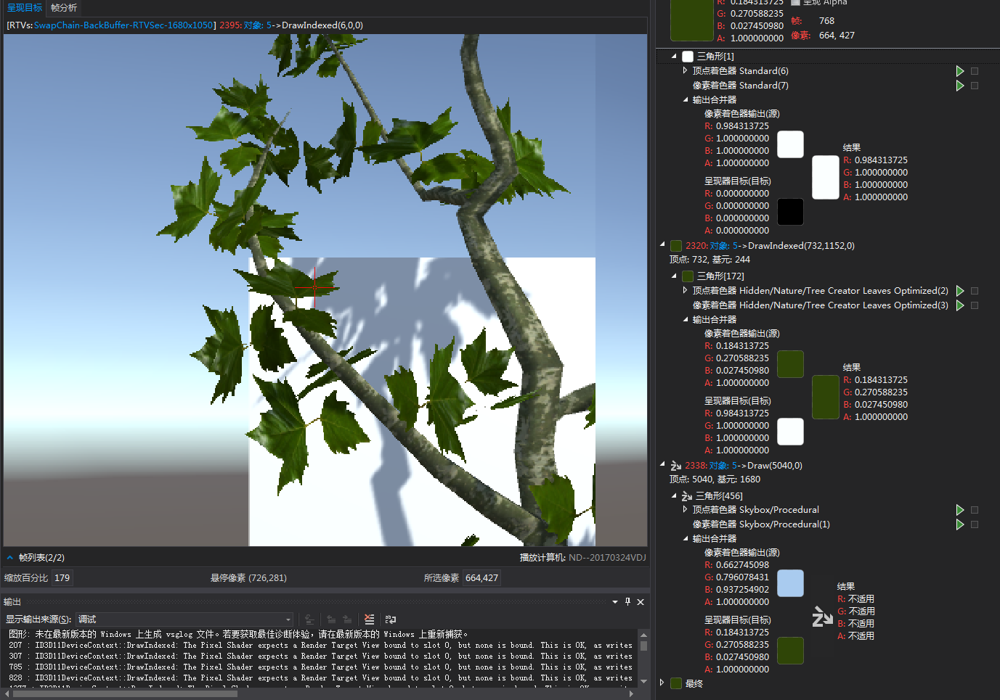
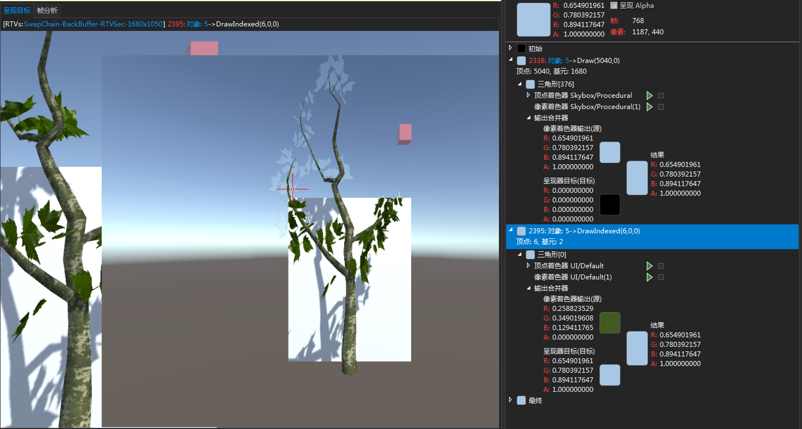
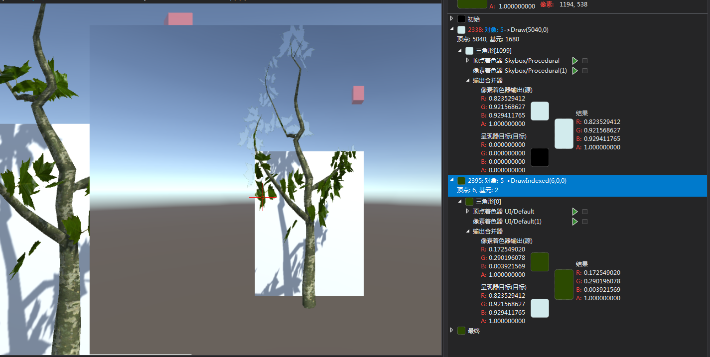

TOC
TreeCreator的叶子在RenderTexture下透明度异常的问题
使用Unity Tree Creator创建的Tree，在场景中使用相机实时渲染到RenderTexture上，并在RawImage中显示的，结果如图所示：

可以看到：
1.背景是skyBox的地方，叶子部分呈现半透明状态。
2.背景是Quad的地方，叶子部分显示正常。
利用Frame Debugger排查



可以看到：
1、在绘制Quad的时候，Shader向颜色缓冲区的A通道写入值
2、在绘制Leaf的时候，Shader不向颜色缓冲区的A通道写入值
3、在RawImage UI绘制的时候，使用Blend SrcAlpha OneMinusSrcAlpha进行透明度融合
从以上信息，可以猜测出问题的原因如下：在RawImage UI进行透明度融合的时候：
- 背景是天空盒的叶子位置，由于A通道值是0，Blend 0 1，导致叶子颜色不在显示。
- 背景是Quad的叶子位置，由于A通道是1（由Quad的Shader写入），Blend 1 0，导致最终显示的叶子颜色。
利用Graphic Debugger进行验证
A.先看RenderTexture还未在RawImage显示前的渲染事件


1 背景是SkyBox的叶子：
1.1 渲染叶子时，向颜色缓冲区，输出绿色，但是A通道不赋值，导致A通道为0;
1.2 渲染SkyBox时，没有通过ZTest，略过；
2 背景是Quad的叶子：
2.1 Quad先渲染，向颜色缓冲区，输出白色，A通道为1；
2.2 渲染叶子时，向颜色缓冲区，输出绿色，但是A通道不赋值，导致A通道还是1;
2.3 渲染SkyBox时，没有通过ZTest，略过；
B.再看RenderTexture渲染到RawImage时的事件


在Blend SrcAlpha OneMinusSrcAlpha的作用下
1 背景是SkyBox的叶子：
Blend 0 1，导致输出颜色是目标颜色，而不是源颜色
2 背景是Quad的叶子：
Blend 1 0，导致输出颜色是源颜色，达到效果
如果解决？
去修改Tree Creator叶子的Shader不太现实，资源数量庞大，且不受控制。
只能在RawImage默认使用UI/Default Shader上做文章。将Blend SrcAlpha OneMinusSrcAlpha改为Blend One Zero即可解决该问题。